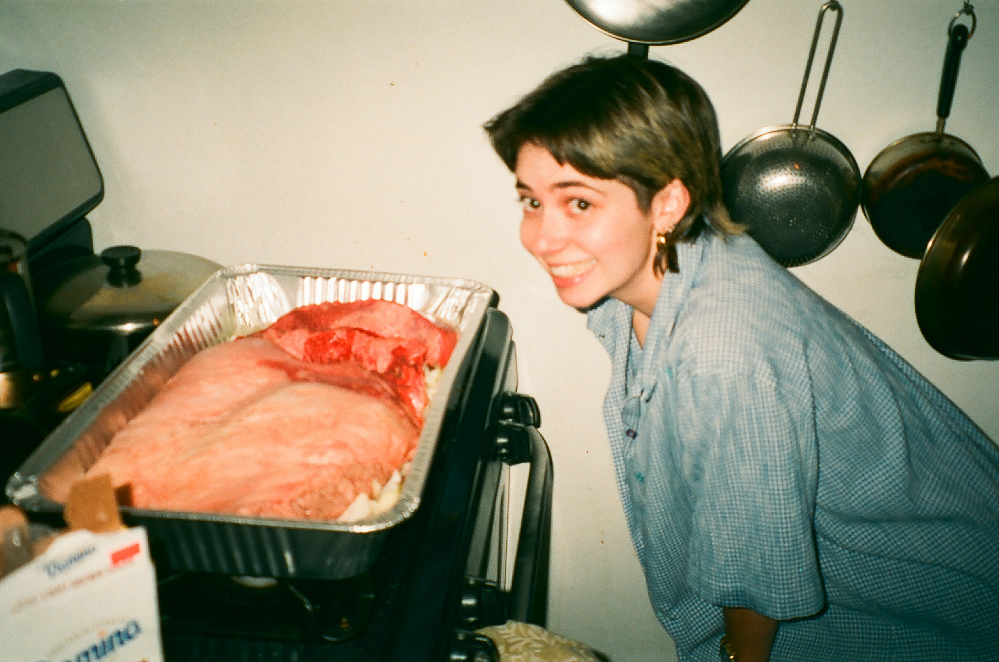
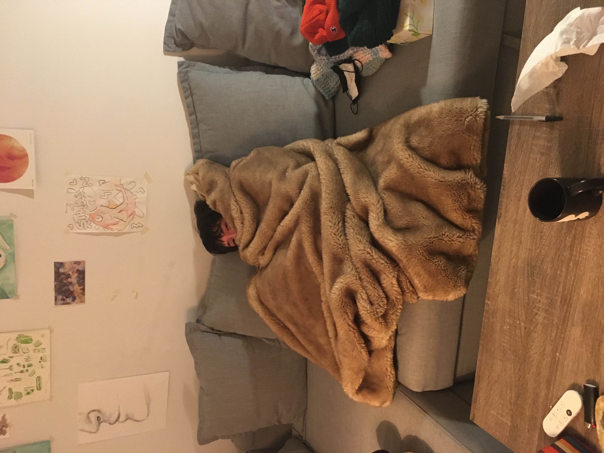
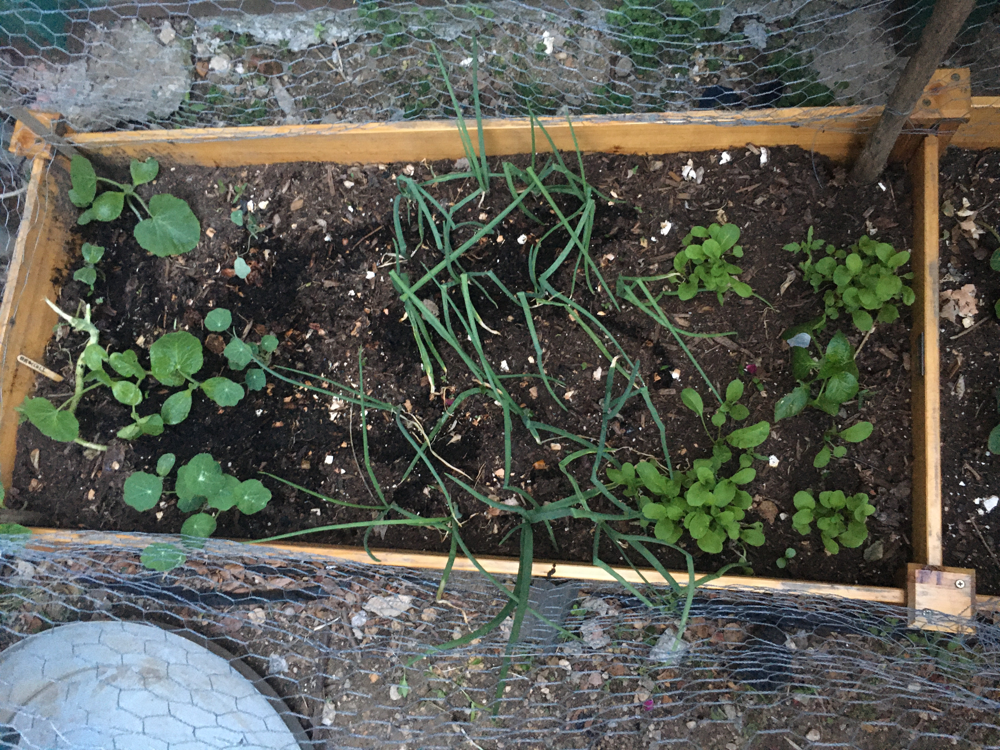
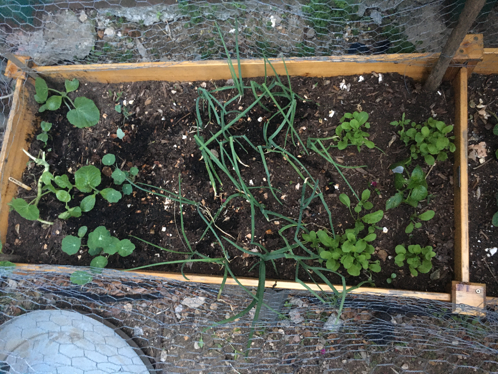

This page is about my roommates
I love my roommates and they are an important part of my life. We consider each other family <3
Our names are:
- Sal

- Mimi

- Noa

- Molly
- Cookie
We moved into our apartment last August
Here are some pictures of our garden
 
